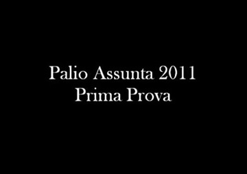
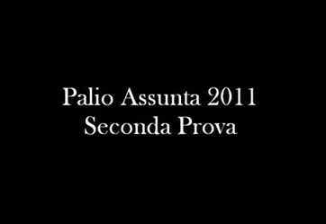

Ha vinto la Giraffa! E’ il suo 34° drappellone.
Un Palio rocambolesco con il Leocorno che ha dominato la parte iniziale della corsa, in testa fino al primo Casato. Da qui la volata di Fedora Saura e Brio fino alla vittoria.
Questo l’ordine d'ingresso al canape: Aquila, Lupa, Pantera, Bruco, Leocorno, Giraffa, Istrice, Torre, Chiocciola e di rincorsa il Nicchio.
Trascorsi una ventina di minuti, dopo che il mossiere ha dovuto far uscire dai canapi per quattro volte tutte le contrade, soprattutto per l'irrequietezza della Pantera, sempre alla ricerca del'Aquila, finalmente la mossa. Parte forte il Leocorno seguito dalla Torre e dalla Giraffa.
Al primo San Martino è il Leocorno in testa seguito dalla Giraffa, dalla Torre, dal Bruco, dalla Chiocciola e dal Nicchio. Al primo Casato è sempre Scompiglio a girare primo, seguito dalla Giraffa, dalla Torre e dal Nicchio che supera dall’interno la Chiocciola che era quarta.
All’altezza del bandierino la svolta del Palio, con la Giraffa che prende la testa e la mantiene fino alla vittoria.
Al secondo giro, davanti al Bar Fonte Gaia si ferma il cavallo della Torre, con problemi di deambulazione. Si giunge così al terzo S.Martino che vede le cadute di Aquila, Lupa e Istrice, innescate da Trecciolino, fantino del Bruco.
La corsa finisce con sole tre contrade (considerato che anche la Pantera si ferma poco dopo S.Martino), con la Giraffa seguita dal Leocorno e dal Nicchio.
È dunque un trionfo bianco-rosso con l’accoppiata Brio e Fedora Saura entrambi al loro terzo successo in Piazza.




|